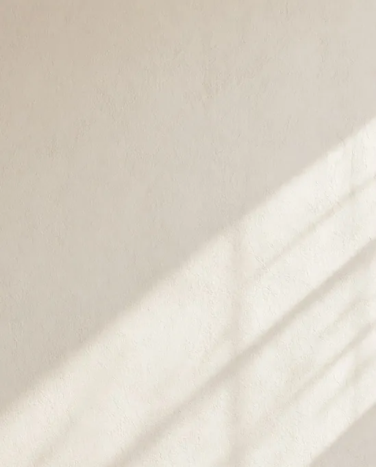
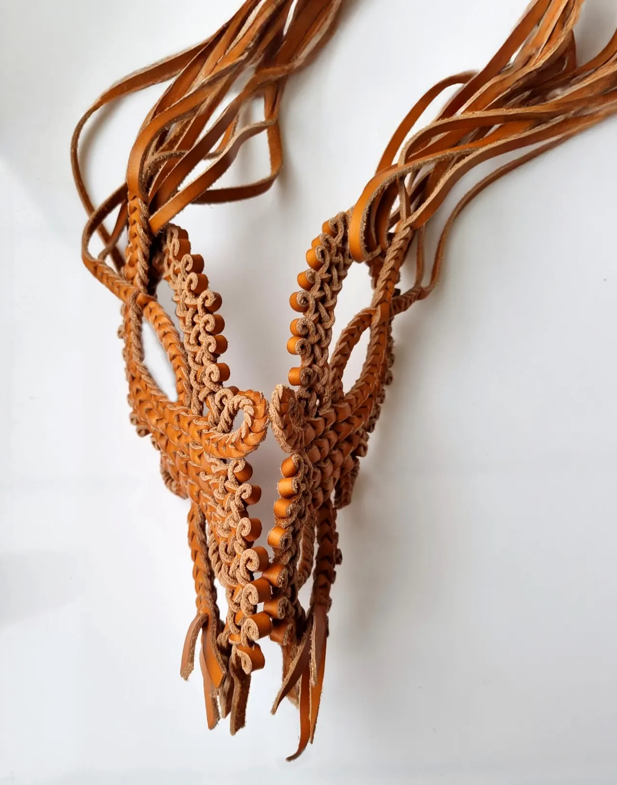
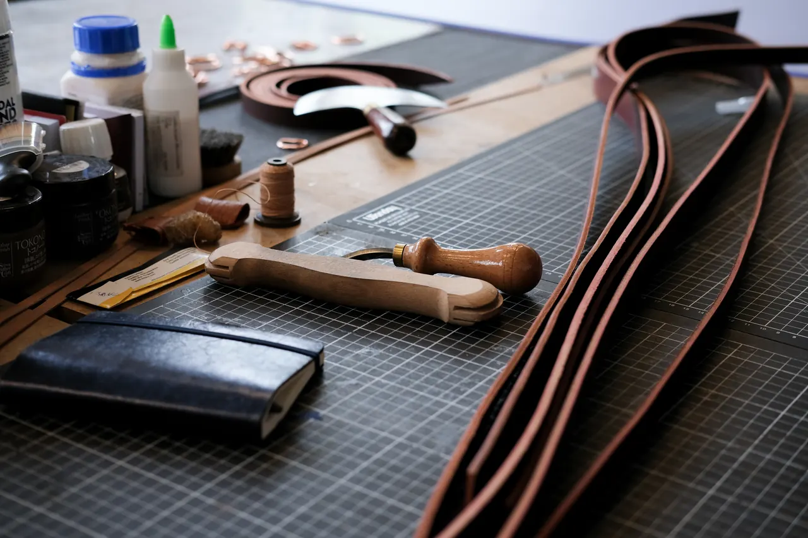
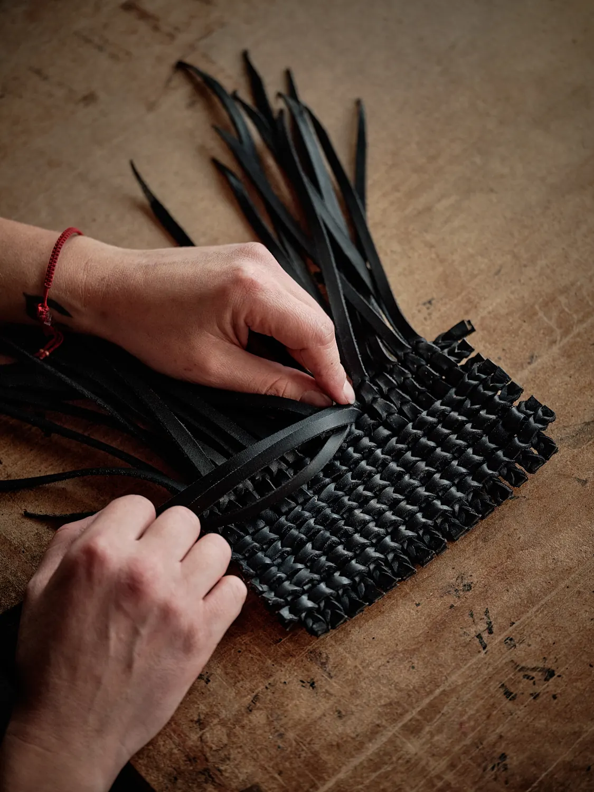
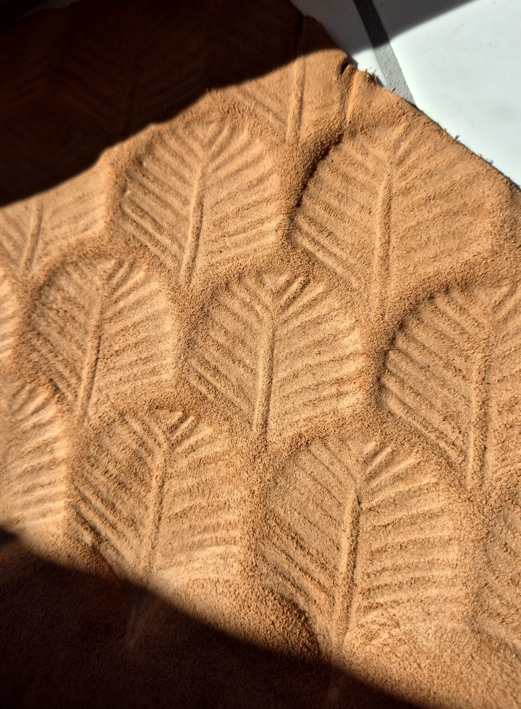
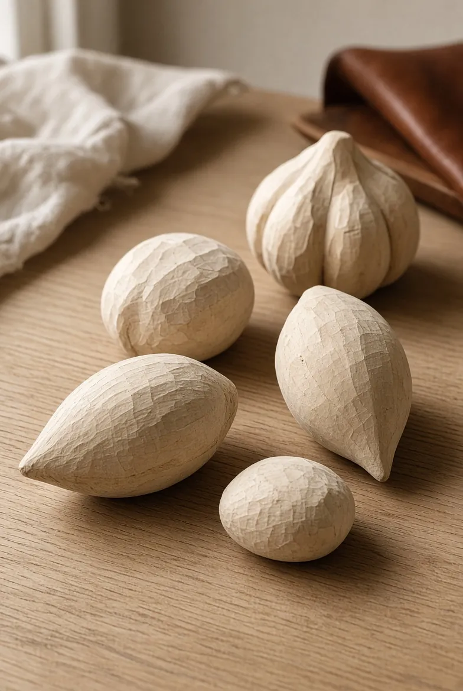
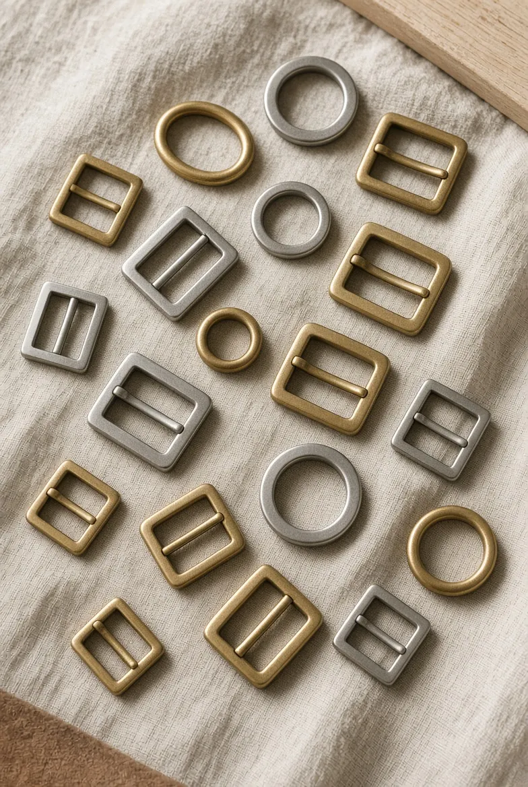

Savoir-faire
L’atelier accompagne les maisons de luxe, les studios de création et les équipes de développement produit dans la conception de pièces en cuir sur mesure.
Pour la haute couture, le prêt-à-porter, les accessoires et les projets créatifs.


Développement technique
L’atelier accompagne la conception et la mise au point de pièces en cuir sur mesure pour la haute couture, le prêt-à-porter, les accessoires et les projets créatifs.
À partir d’un dessin, d’un brief créatif ou d’une intention technique, il recherche les solutions de construction, de mise en forme et d’assemblage qui permettent de concrétiser le projet. Son intervention couvre le développement technique, la recherche de procédés, la réalisation d’échantillons et le prototypage de pièces spécifiques.
Demander plus d’informations

Shallang
Procédé ornemental hongrois du XIXe siècle, issu de l’art équestre.
Orpheline de formation et d’ouvrages, la technique a été apprivoisée par Sofia Shazak à partir de photos d’archives. Cette méthode rare et confidentielle trouve sa place dans la décoration intérieure comme dans la mode, en ornement ou comme œuvre à part entière.
Demander plus d’informationsCroisez les brins
Faites glisser le pointeur ou le doigt sur la zone, ou utilisez les flèches du clavier : trois lanières se croisent, comme dans une tresse à trois brins. Le Shallang de l’atelier est bien plus complexe.
Cuir moulé
Un savoir-faire ancestral et polyvalent, qui donne forme et effet de détails à la peau.
Le moulage ouvre un large éventail de possibilités créatives. Réalisé sans produits chimiques, la pièce finie promet rigidité, résistance, légèreté et une adaptation à toutes formes et projets.
Demander plus d’informations
La peau prend forme
Faites défiler : une plaque de cuir se moule sur une forme invisible. Déplacez le pointeur pour orienter la lumière rasante.
Simulation interactive, ce n’est pas une pièce de l’atelier. Sans WebGL ou avec les animations réduites, une vraie photo de cuir moulé la remplace.

Harnachement revisité
La revisite des techniques de l’harnachement équestre apporte une nouvelle dimension au décor et à la mode.
Les techniques de briderie ou liées au travail de la selle allient esthétique et fonctionnalité. Le vocabulaire de l’art équestre, avec ses boucles, ses jeux de matelassures ou son point sellier, sublime accessoires et éléments décoratifs, du panneau au séparateur d’espace, jusqu’à la pièce de corps.
Demander plus d’informationsBoucle
Pièce de métal qui ferme et règle une sangle. L’atelier emploie l’inox, le laiton doré et l’or rose.
Matelassure
Rembourrage cousu sous le cuir, hérité de la selle, qui donne volume et confort.
Point sellier
Couture main à deux aiguilles : chaque trou est traversé par deux fils, et la couture tient même si l’un d’eux casse.
Briderie
Travail des brides et des bridons : sangles fines, passants, brédissures pour la tenue en main.
